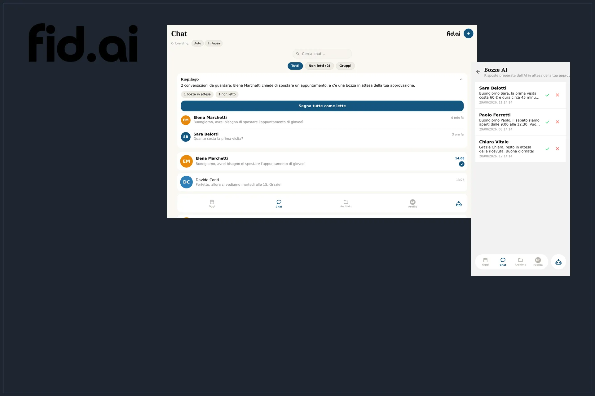
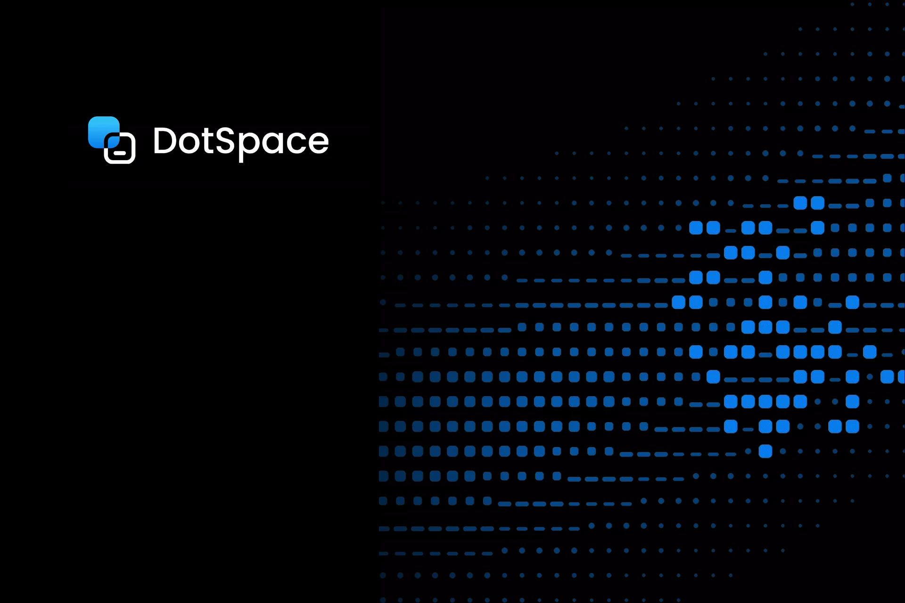

Meno lavoro ripetuto a mano
Vengo dal mondo accademico, dove ho iniziato ad automatizzare con l'IA i processi amministrativi più noiosi. Oggi mi occupo di smontare i sistemi che le persone ripetono a mano e rimontarli in flussi autonomi, per togliere lavoro superfluo.
Uso IA, pipeline RAG e orchestrazione di LLM.
Sicurezza, permessi e dati personali vengono sempre al primo posto.
produzione
#6000
3.8s
Attivo
rag-gdpr
- Raccolta
35 GB email · record normalizzati0.6s - Filtro GDPR
anonimizzazione dati personali0.8s - Pipeline RAG
85 regole operative estratte0.7s - Router LLM
classifica ed esegue praticaIn coda - Consegna
documento pronto e archiviatoIn coda
whoami
Detesto il lavoro ripetitivo e promuovo la delega a sistemi esperti personalizzati. Lavoro da remoto proteggendo i dati dei clienti: server dedicati in Europa, conformità al GDPR, permessi granulari e rispetto dell'AI Act.
Il mio percorso: dallo sport al mondo dei pc
Nasco come atleta professionista, ottengo un doppio titolo universitario sul tema, poi vinco una borsa di ricerca di quattro anni in UniTO e scopro ciò che mi appassiona: studiare i processi aziendali per semplificare i flussi lavorativi. Scarica la presentazione
-
2016–2022: Scienze motorie a Torino
Triennale con 110/110, magistrale con 105/110 e dignità di stampa, due Erasmus+ all'Universidad de Almería e una ricerca sul benessere dopo la pandemia, presentata al Convegno SIPI di Padova.
-
2023–2027: ufficio tirocini dell'Università di Torino
Oltre 800 enti convenzionati e 6.000 pratiche automatizzate. Grazie a questo progetto di digitalizzazione avvio una partnership internazionale con l'Universidad de Concepción, in Cile, per condividere il modello sui flussi formativi.
-

Dal 2025: fid.ai
Fondo fid.ai e la porto dall'idea al server: una segreteria AI su WhatsApp per professionisti che trascrive i vocali in Europa, prepara le bozze di risposta e fissa gli appuntamenti su Google Calendar.
-

2026: DotSpace
Divento socio di DotSpace insieme a quattro sviluppatori: progettiamo API e webapp su misura in TypeScript, Hono, React e PostgreSQL, dal design in Figma alla revisione del codice fino al deploy Docker.
Progetti che porto avanti
Software, formazione e un'azienda giovane: li seguo dall'idea al server.
- fid.ai
La tua segreteria digitale e intelligente: gestisce per te le richieste di tutti i tuoi clienti. Apri fidai.it
Founder - Facilitazione d'aula
Progetto e conduco i webinar di formazione manageriale di Towers Watson Italia e Challenge Network.
Webinar - Formazione IA a scuola
Docente formatore presso La Lucerna Educational a Cuneo: percorsi sull'IA per i docenti della scuola primaria e secondaria di primo grado.
30 ore - DotSpace
L'azienda di cui sono socio con quattro sviluppatori: API e webapp su misura in TypeScript, React e PostgreSQL, nata da poco.
Socio
- Fondamenti IA e verifica delle fonti
- Attività pratiche per la scuola primaria
- Laboratori per la secondaria di primo grado
- Tutela dati degli studenti in classe
- Kit didattico pronto per i docenti